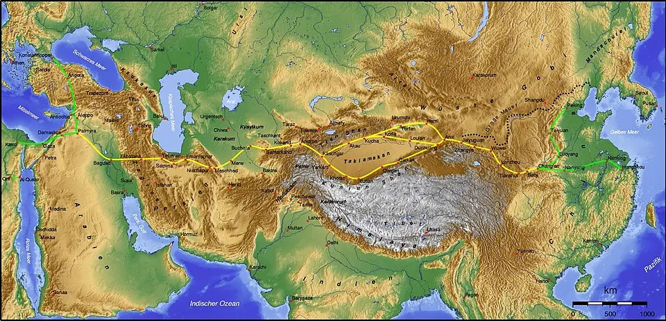
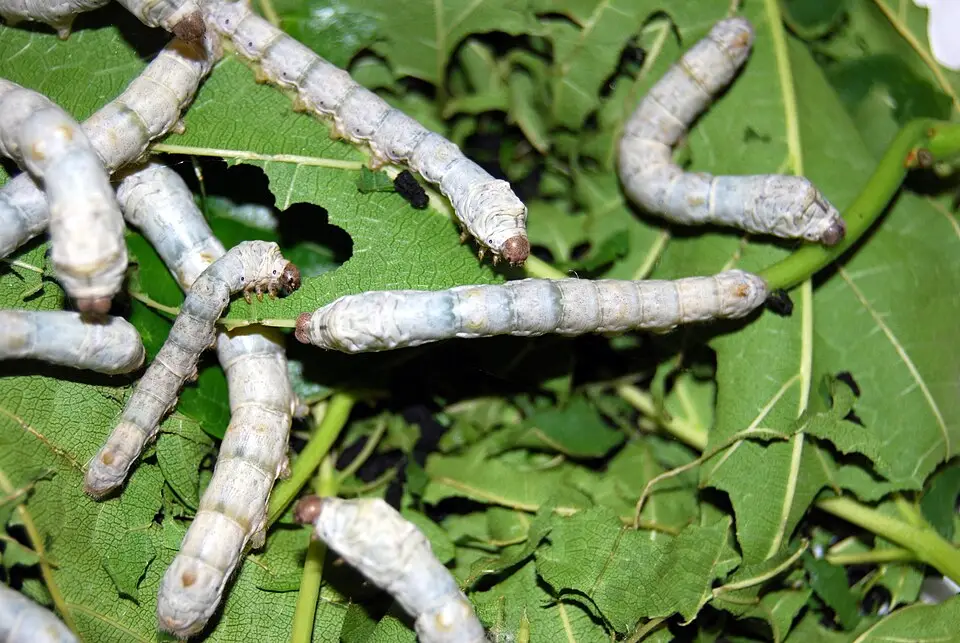
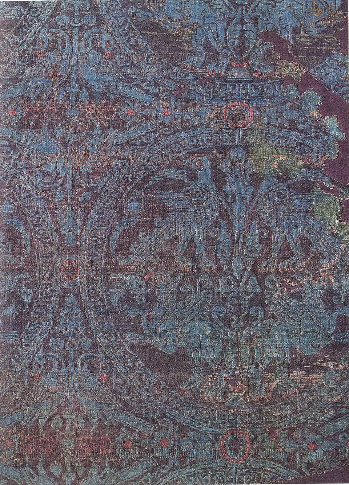
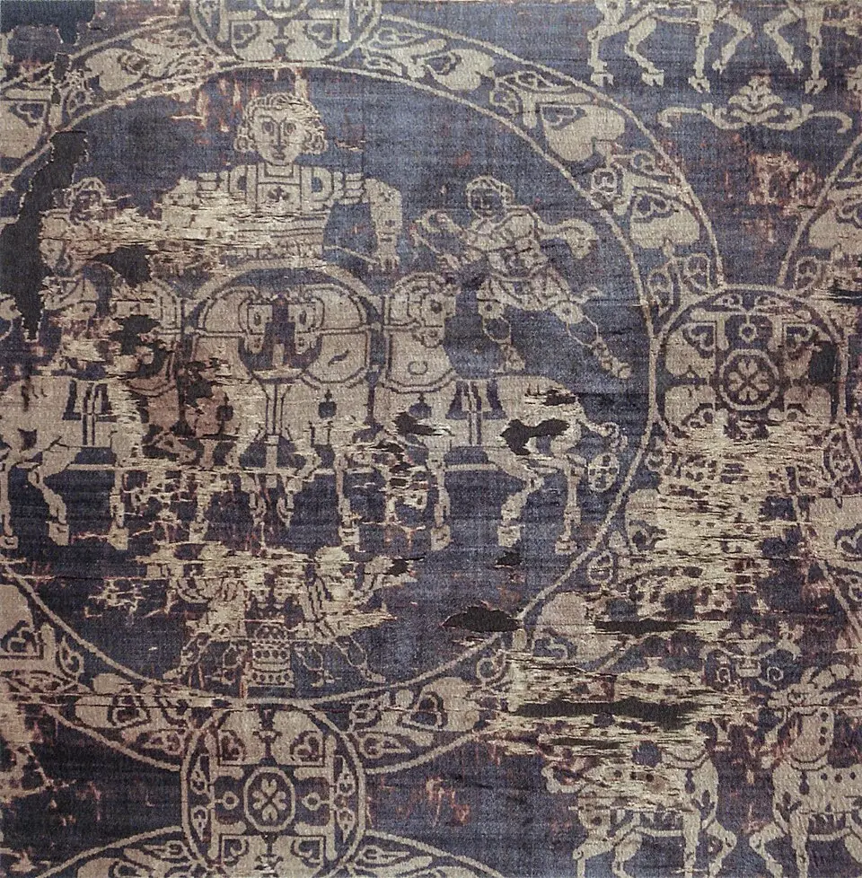

Hai nhà sư buôn lậu trứng tằm vào đế quốc Byzantine
Năm 552, hai nhà sư từ phương đông đến gặp hoàng đế Justinian và hứa mang về thứ mà người La Mã chưa từng thấy: trứng tằm.

Năm 552, hai nhà sư xin vào gặp hoàng đế Justinian I ở Constantinople. Họ nói đã sống ở phương đông, đã tận mắt thấy người ta nuôi con tằm để kéo tơ. Đó là một tin lớn. Người Đông La Mã mặc lụa, trả giá cao cho lụa, nhưng cho đến khi ấy vẫn tưởng lụa được làm ở Ấn Độ, và không biết nó đến từ một con sâu.
Người Đông La Mã mặc lụa, trả giá cao cho lụa, nhưng cho đến khi ấy vẫn tưởng lụa được làm ở Ấn Độ, và không biết nó đến từ một con sâu.
Món hàng phải mua qua tay kẻ thù
Theo Wikipedia, người Trung Hoa đã làm ra lụa từ thiên niên kỷ thứ ba trước Công nguyên. Đến thế kỷ 1, lụa đã chảy đều đặn vào đế quốc La Mã theo Con đường Tơ lụa. Nhưng con đường ấy đi qua đất Ba Tư nhà Sasan, và người Ba Tư kiểm soát chặt việc buôn bán, có chiến tranh là cắt hàng.
Justinian đã thử mở đường khác: một đường phía bắc qua bán đảo Crimea, một đường phía nam qua Ethiopia. Cả hai đều thất bại. Thương nhân Aksum ở Ethiopia không cạnh tranh nổi với thương nhân Ba Tư, còn đường từ Lazica sang Trung Hoa thì quá dài và nguy hiểm. Trong khi đó, chính triều đình của ông vẫn đòi lụa.
Trứng, không phải tằm


Hai nhà sư không rõ tên, nhiều khả năng thuộc Giáo hội Nestorian, từng giảng đạo ở Ấn Độ rồi đến Trung Hoa vào khoảng năm 551. Được Justinian hứa thưởng hậu, họ đồng ý quay lại lấy tằm. Họ có lẽ đi theo đường phía bắc, men theo Biển Đen, qua vùng Kavkaz và biển Caspi.
Tằm trưởng thành rất yếu, phải giữ ở nhiệt độ ổn định, nên không thể sống qua chặng đường dài. Theo Wikipedia, các nhà sư nhờ người quen ở Sogdiana, vùng Trung Á, lấy trứng tằm hoặc ấu trùng mới nở, rồi giấu trong những cây gậy tre của mình. Cây dâu, thức ăn duy nhất của tằm, có thể đã được mang theo hoặc đã có sẵn ở đế quốc. Cả chuyến đi được ước tính kéo dài khoảng hai năm.
Bằng chứng nói gì


Câu chuyện hai nhà sư đến từ sử gia Byzantine Procopius, người sống dưới triều Justinian. Bài Wikipedia về lụa Byzantine ghi thời điểm trứng tằm được đưa về là khoảng năm 553 đến 554.
Một nguồn khác kể hơi khác. Sử gia Theophanes xứ Byzantium, cũng ở thế kỷ 6, viết rằng người mang "hạt giống", tức trứng tằm, đến Constantinople là một người Ba Tư từ xứ Seres, tên người La Mã gọi vùng đất của lụa. Sách của Theophanes đã mất. Ta chỉ biết đoạn này nhờ thượng phụ Photius tóm tắt lại vào thế kỷ 9. Theo bản tóm tắt ấy, trứng nở vào mùa xuân, tằm được nuôi bằng lá dâu, rồi nhả tơ và hóa nhộng.
Như vậy, sự kiện trứng tằm được đưa lậu vào thời Justinian có hai nguồn thế kỷ 6 xác nhận. Còn ai mang về, giấu bằng cách nào, thì các nguồn không hoàn toàn khớp nhau.
Một độc quyền 650 năm


Ít lâu sau, xưởng lụa mọc lên ở Constantinople, Beirut, Antioch, Tyre và Thebes. Sau thời Justinian, việc làm và bán lụa trở thành độc quyền của nhà nước, chỉ được dệt trong xưởng hoàng gia và bán cho người mua được cấp phép. Lụa nhuộm màu tím hoàng gia chỉ dành cho giới quý tộc, và luật lệ quy định ai được mặc gì. Ai tự ý làm lụa tím sẽ bị tịch thu hàng và nộp phạt. Lụa còn được dùng làm tiền trả và làm quà ngoại giao.
Độc quyền ấy kéo dài khoảng 650 năm. Nó bắt đầu lung lay năm 1147, khi vua Roger II của Sicily tấn công Corinth và Thebes, hai trung tâm dệt lụa của Byzantine, bắt cả thợ dệt lẫn khung cửi về Palermo. Nó chấm dứt khi quân Thập tự chinh lần thứ tư chiếm Constantinople năm 1204.
Dư âm đến hôm nay
Nghề nuôi tằm quanh Constantinople, nhất là ở vùng Thrace, vẫn còn đến ngày nay. Thị trấn Soufli ở đông bắc Hy Lạp có cả bảo tàng lụa.
Việc đưa trứng tằm vào đế quốc Đông La Mã là có thật; còn hình ảnh hai nhà sư với cây gậy tre rỗng là phần chi tiết mà các nguồn cổ không kể giống nhau.